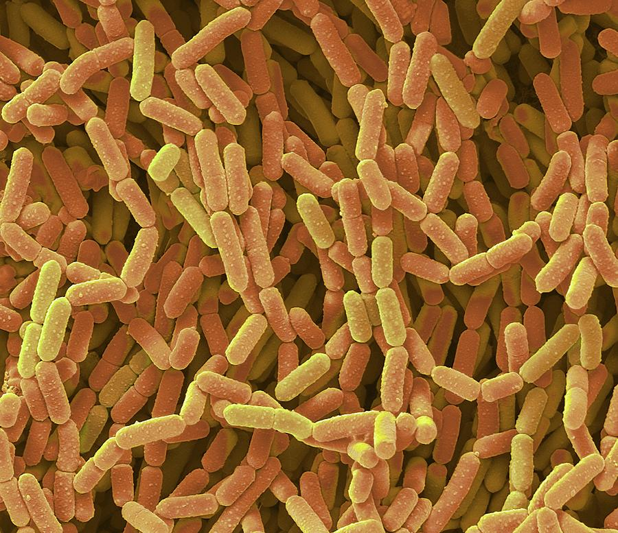

Lactobacillus rhamnosus
Scientific classification
| Domain: | Bacteria |
| Phylum: | Firmicutes |
| Class: | Bacilli |
| Order: | Lactobacillales |
| Family: | Lactobacillaceae |
| Genus: | Lacticaseibacillus |
| Species: | L. rhamnosus |
Binomial name
Lacticaseibacillus rhamnosus
(Hansen 1968) Collins et al. 1989;
Zheng et al., 2020
Genome
L. rhamnosus is considered a nomadic organism[8] and strains have been isolated from many different environments including the vagina and the gastrointestinal tract. L. rhamnosus strains have the capacity for strain-specific gene functions that are required to adapt to a large range of environments.[9] Its core genome contains 2,164 genes, out of 4,711 genes in total (the pan-genome).[9] The accessory genome is overtaken by genes encoding carbohydrate transport and metabolism, extracellular polysaccharides, biosynthesis, bacteriocin production, pili production, the CRISPR-Cas system, the clustered regularly interspaced short palindromic repeat (CRISPR) loci, and more than 100 transporter functions and mobile genetic elements such as phages, plasmid genes, and transposons.[9]
The genome of the specific strain L. rhamnosus LRB, in this case, taken from a human baby tooth, consists of a circular chromosome of 2,934,954 bp with 46.78% GC content.[10] This genome contains 2,749 total genes with 2,672 that are total protein-coding sequences.[10] This sample did not contain any plasmids.[10] The most extensively studied strain, L. rhamnosus GG, a gut isolate, consists of a genome of 3,010,111 bp. Therefore, the LRB genome is shorter than GG’s genome. LRB lacks the spaCBA gene cluster of GG and is not expected to produce functional pili (6).[10] This difference may help explain why each strain lives in a different habitat.
Lacticaseibacillus rhamnosus GG (ATCC 53103)
L. rhamnosus GG (ATCC 53103) is a strain of L. rhamnosus that was isolated in 1983 from the intestinal tract of a healthy human being; filed for a patent on 17 April 1985, by Sherwood Gorbach and Barry Goldin,[11] the 'GG' derives from the first letters of their surnames.[12] The patent refers to a strain of "L. acidophilus GG" with American Type Culture Collection (ATCC) accession number 53103; later reclassified as a strain of L. rhamnosus. The patent claims the L. rhamnosus GG (ATCC 53103) strain is acid- and bile-stable, has a great avidity for human intestinal mucosal cells, and produces lactic acid. Since the discovery of the L. rhamnosus GG (ATCC 53103) strain, it has been studied extensively on its various health benefits and currently L. rhamnosus GG (ATCC 53103) strain is the world's most studied probiotic bacterium with more than 800 scientific studies.
The genome sequence of Lactobacillus rhamnosus GG (ATCC 53103) has been decoded in 2009.
History
In 1983, L. rhamnosus GG was isolated from the intestinal tract of a healthy human by Sherwood Gorbach and Barry Goldin.
Medical research and use
While L. rhamnosus GG (ATCC 53103) is able to survive the acid and bile of the stomach and intestine,[15] is claimed to colonize the digestive tract, and to balance intestinal microbiota, evidence suggests that L. rhamnosus, comparable to virtually all probiotic lactobacilli, is only a transient inhabitant and not autochthonous.[16] Regardless, it is considered a probiotic useful for the treatment of various maladies, as it works on many levels. Lactobacillus rhamnosus GG binds to the gut mucosa.
Diarrhea
L. rhamnosus GG is beneficial in the prevention of rotavirus diarrhea in children. Prevention and treatment of various types of diarrhea have been shown in children and in adults.[18][19] L. rhamnosus GG can be beneficial in the prevention of antibiotic-associated diarrhea and nosocomial diarrhea and this has been recently supported by European guidelines.[20][21][22] Lactobacillus rhamnosus GG may reduce the risk of traveler's diarrhea.
Acute gastroenteritis
A position paper published by ESPGHAN Working Group for Probiotics and Prebiotics based on a systematic review and randomized controlled trials (RCTs) suggested that L. rhamnosus GG (low quality of evidence, strong recommendation) may be considered in the management of children with acute gastroenteritis in addition to rehydration therapy.
Atopic dermatitis, eczema
Lactobacillus rhamnosus GG has been found to be ineffective for treating eczema.[25] However in one non-randomized clinical observation[26] dealing with resistant childhood atopic eczema, a substantial improvement in quality of life was reported in pediatric patients given Lactobacillus rhamnosus as a supplement.
Risks
The use of L. rhamnosus GG for probiotic therapy has been linked with rare cases of sepsis in certain risk groups, primarily those with a weakened immune system and infants.[27] Ingestion of GG is considered to be safe and data show a significant growth in the consumption of L. rhamnosus GG at the population level did not lead to an increase in Lactobacillus bacteraemia cases.
L. rhamnosus GR-1
L. rhamnosus GR-1 was originally found in the urethra of a healthy female and is nowadays a model strain for vaginal probiotics. A genome comparison between L. rhamnosus GG and L. rhamnosus GR-1 shows that GR-1 lacks spaCBA-encoded pili, an important adhesin in L. rhamnosus GG adhesion to the intestinal epithelial cells.[29] In contrast, L. rhamnosus GR-1 utilises lectin-like proteins to attach to carbohydrates on the surface of the target cell. Lectin-like proteins preferentially bind to nonkeratinized stratified squamous cells which are found in the urethra and vagina. The lectin-like protein 1 purified from L. rhamnosus GR-1 is found to prevent infection by the uropathogenic E. coli UTI89 by inhibiting its adhesion to epithelial cells and by disrupting its biofilm formation.[30] Additionally, it can increase biofilm formation in other beneficial lactobacilli that inhabit the vagina.